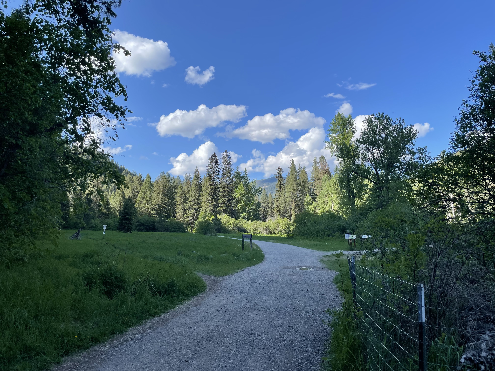
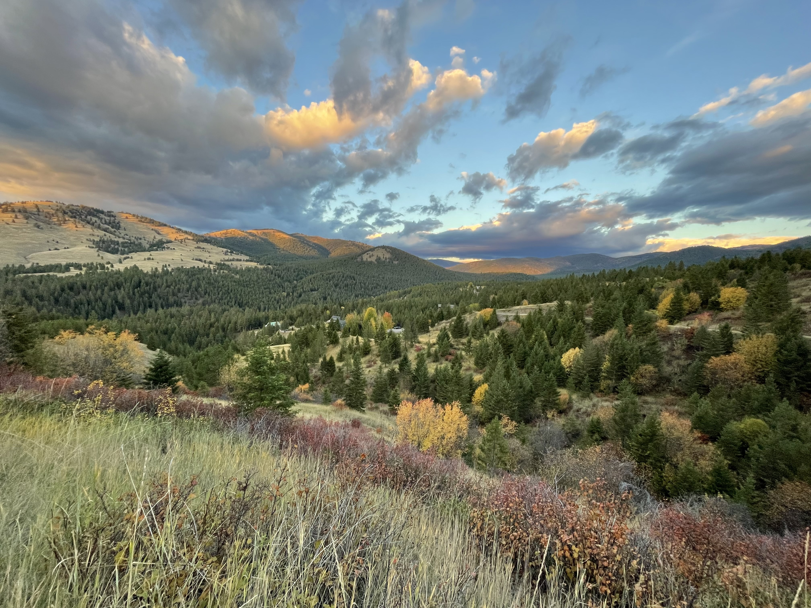

Hiking Hotspots in Missoula

Blue Mountain Recreation Area
Blue Mountain is an excellent hiking and recreation area, just a quick 10-15 minute drive from downtown. This hotspot is well-known as a dog friendly area and popular amongst mountain bikers in the summertime!

Rattlesnake Recreation Area
This popular Recreation Area is nestled north of Missoula. With varying intensities of hiking, biking, and cross-country skiing, Missoulians frequent this area year round. You can't beat cooling off on a hot summers day in the creek that runs through this iconic space.

Pattee Canyon
For a more shaded, tree covered area, make your way to Pattee Canyon. Again, an outdoor playground similar to those listed above. You can find a variety of more challenging hikes, off-road driving, and breathtaking vistas if you venture into Pattee.